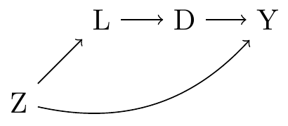

8 使用 G-计算进行因果推断
从模型到意义 - 中文翻译
来源: Vincent Arel-Bundock，从模型到意义：如何解读 R 和 Python 中的统计模型 - 第 8 章 使用 G-计算进行因果推断。 来源说明: 截至 2026-09-19，修订版 870f15a0 的公共仓库不包含本章完整的 .qmd 源文件。本页面翻译自同日下载的公开 HTML 快照。因此，R/Python 代码和图形均以静态形式展示；本站未重新执行上游代码。 网站文本 (C) 2025 Vincent Arel-Bundock，保留所有权利；marginaleffects 软件代码以 GPL-3 授权。 本页面为中文翻译，并非原文；根据本 Notes 网站所采用的授权声明进行翻译和发布。
从观察性数据中进行因果推断可能很困难。通常，分析者无法控制的因素会同时影响处理暴露和所关注的结果变量。这类混杂变量可能会使我们对处理效应的估计值产生偏倚。
想象一项旨在评估每日补充维生素 D 对骨密度影响的研究。如果分析者发现服用维生素 D 的人骨密度更高，可能会倾向于得出补充维生素 D 直接改善骨骼健康的结论。然而，选择服用维生素 D 的人也可能更加关注健康，并参与锻炼或食用富含钙的食物等其他强化骨骼的活动。这些混杂因素可能掩盖真实的因果效应，也可能使分析者对该效应的估计值产生偏倚。
G-计算1 是一种用于从观察性数据中进行因果推断的方法。其思路很简单。首先，我们拟合一个控制混杂因素的统计模型。然后，使用拟合后的模型“预测”或“插补”某个个体在不同处理情景下会发生什么。最后，我们比较反事实预测，以得到处理效应的估计值（Hernán and Robins 2020）。
正如下面将要看到的，G-计算的估计值等同于第 5 章和第 6 章讨论的反事实预测和比较。它们也与通过逆概率加权（IPW）获得的估计值密切相关，后者是另一种常用的因果推断工具。IPW 和 G-计算施加了相似的识别假设，但有一个关键区别：前者对决定谁接受处理的过程建模，而后者对结果变量建模。2
下一节将介绍分析者可以通过 G-计算作为目标的几个关键目标估计量：平均处理效应（ATE）、对已处理者的平均处理效应（ATT）以及对未处理者的平均处理效应（ATU）。后续各节将把估计过程呈现为三个步骤的序列：建模、插补和比较。
8.1 处理效应：ATE、ATT、ATU
我们的目标是估计处理 \D\ 对结果变量 \Y\ 的影响。为了将这种影响表示为正式的目标估计量，并理解针对该目标估计量所需的假设，我们需要引入一些来自因果推断潜在结果传统的符号记法。3
我们需要定义的第一个项表示处理或解释变量的取值。当 \D_i=1\ 时，个体 \i\ 被分配到处理组。当 \D_i=0\ 时，\i\ 属于对照组。
第二个项表示结果变量。在这里，必须区分结果变量的实际取值和其潜在取值。实际结果是我们在数据集中观察到的个体 \i\ 的结果：\Y_i\。相比之下，潜在结果用上标表示：\Y_i^0\ 和 \Y_i^1\。它们表示在个体 \i\ 接受不同处理的反事实世界中会出现的结果。\Y_i^0\ 是假想世界中个体 \i\ 属于对照组时的结果值。\Y_i^1\ 是假想世界中个体 \i\ 属于处理组时的结果值。关键在于，对于任何给定个体，在任一时刻最多只能观察到一个潜在结果。由于 \i\ 不可能同时属于处理组和对照组，我们永远无法同时测量 \Y_i^1\ 和 \Y_i^0\ 的值。我们只能测量与实际分配给个体 \i\ 的处理相对应的潜在结果。
雄心勃勃的分析者会希望估计个体处理效应（ITE），即个体 \i\ 在不同处理方案下结果的差值：\Y_i1-Y_i0\。遗憾的是，由于我们只能观察两个潜在结果中的一个，ITE 不可能被计算出来。这就是有些人所称的因果推断的根本问题。
为绕过这一问题，我们不再关注个体层面的目标估计量，而是考虑三个有意义的聚合量：ATE、ATT 和 ATU。这三个量彼此相关，但其解释不同，所需假设也不同（Greifer and Stuart 2021）。
8.1.1 解释
我们的三个目标估计量定义如下：
\\
ATE 估计整个研究人群中处理对结果变量的平均影响。ATE 帮助我们回答这样一个问题：某项计划或处理是否应当普遍实施？
ATT 估计实际接受处理的研究参与者子集中，处理对结果变量的平均影响。ATT 帮助我们回答这样一个问题：是否应当对当前正在接受该计划或处理的人停止提供它？
ATU 估计事实上未接受处理的参与者子集中，处理的平均影响。ATU 帮助我们回答这样一个问题：是否应当将某项计划或处理扩展到最初未接受它的人？
8.1.2 假设
估计 ATE、ATT 或 ATU 需要接受四项严格程度各异的假设（Greifer and Stuart 2021；Chatton and Rohrer 2024）。
第一，条件可交换性，即不存在未测量的混杂因素。该假设认为，在给定一组控制变量（\Z_i\）的条件下，潜在结果必须与处理分配相互独立。更形式化地说，我们可以写作 \Y_i1,Y_i0 \perp D_i \mid Z_i\。
想象一个人正在考虑参加一项旨在提高就业可能性的培训计划。如果这个人知道无论是否接受培训都能就业，那么他就不太可能报名参加该计划：如果 \Y_i1=Y_i0\，那么 \D_i=0\。类似地，想象一位医生只向最有可能从某种药物中获益的患者推荐该药物：如果 \Y_i1\>Y_i0\，那么 \D_i=1\。在这两种情况下，潜在结果都与处理分配机制相关：\D_i \not\perp Y_i1,Y_i0\。除非分析者能够控制所有相关混杂因素，否则条件可交换性假设在两种情况下都被违反。
估计 ATE 时，条件可交换性必须在整个总体中成立。然而，估计 ATT 时，这一严格假设可以有所放宽。直观地说，由于 ATT 完全基于处理组中的个体计算，我们可以观察到全部 \Y_i^1\ 潜在结果。因此，要估计 ATT，我们只需要对未观察到的 \Y_i^0\ 潜在结果作出假设；只需调整那些将处理分配与参与者在对照条件下的结果联系起来的混杂因素。类似地，估计 ATU 只要求条件可交换性在处理条件下成立。
第二，正值性。该假设要求研究参与者属于每个处理组的概率均非零：\0\<P(D_i=1\mid Z_i)\<1\。实践中，这一条件可能因多种原因而被违反，例如某些个体不符合接受某种处理的资格标准，却仍然属于对照组。
估计 ATE 时，正值性必须在整个样本中成立。然而，估计 ATT 时，正值性假设可以有所放宽：\P(D_i=1\|Z_i)\<1\。这一新条件意味着，没有参与者能够确定自己一定会接受处理，但可以排除某些参与者接受处理的可能性。类似地，我们可以接受较弱形式的正值性来估计 ATU，即每位参与者都必须有一定机会接受处理：\P(D_i=1\|Z_i)\>0\。
第三，一致性。4 该假设要求干预被明确定义；对于什么构成“处理”和“对照”不能存在歧义。例如，在一项医学研究中，一致性可能要求处理组所有参与者在相同条件下接受同一种药物和相同剂量。在工作培训干预的背景下，一致性可能要求严格遵循特定的计划设计，包括固定的面对面教学时数、作业数量、实习要求等。
第四，无干扰性。这一最后的假设表示，一名参与者的潜在结果不应受到其他个体处理分配的影响。将一个人（或一组人）分配到某种处理方案，不能对研究中的其他参与者造成传染或产生外部性。
当这四项假设成立时，我们就可以通过 G-计算估计处理的影响。本节其余部分将这一估计策略描述为三个步骤的系列：建模、插补和比较。
8.1.3 建模
为了说明如何使用 G-计算估计 ATE、ATT 和 ATU，我们考虑 Imbens 等人的这项研究（2001）：对非劳动所得在劳动收入、储蓄和消费方面影响的估计：来自彩票参与者调查的证据。在该文中，作者通过调查估计赢得大额彩票奖金对经济行为的影响。他们研究了不同人群子组的一系列结果变量。本章聚焦于赢得大额彩票奖金对劳动收入的影响。
处理变量是一个二元变量：个人赢得大额彩票奖金时取 1，否则取 0（\D\）。结果变量是随后六年的平均劳动收入（\Y\）。彩票中奖号码是随机选出的，但任一给定个人中奖的概率并非完全随机：它取决于该人购买的彩票数量（\L\）。最后，我们知道，年龄、教育程度和就业状态等社会人口学特征（\Z\）会同时影响个人购买的彩票数量及其劳动收入。下图展示了这些因果关系。

Imbens 等人（2001）收集调查回答，以测量图中所示的变量。他们的数据集包含 437 名受访者的各种信息，其中 194 人赢得了小额彩票奖金，43 人赢得了大额奖金。为简化起见，我们只比较赢得大额奖金的人和完全没有中奖的人。
library(marginaleffects)
dat = get_dataset("lottery")
dat = subset(dat, win_big == 1 | win == 0)
head(dat, n = 2)
age college education man prize tickets win win_big win_small work year
1 76 0 12 0 0 2 0 0 0 0 1986
3 59 1 16 1 0 2 0 0 0 1 1986
earnings_pre_avg earnings_post_avg earnings_pre_1 earnings_pre_2
1 0.00000 0.00000 0.00000 0.0000
3 35.68592 22.83054 34.44951 35.8099
earnings_pre_3 earnings_pre_4 earnings_pre_5 earnings_pre_6 earnings_post_1
1 0.00000 0.00000 0.00000 0.00000 0.000
3 36.79834 39.28434 39.87372 40.33606 42.258
earnings_post_2 earnings_post_3 earnings_post_4 earnings_post_5
1 0.00000 0.00000 0.00000 0
3 42.25775 41.69062 33.60743 0
earnings_post_6 earnings_post_7
1 0 0
3 0 0
import polars as pl
import numpy as np
from marginaleffects import *
from statsmodels.formula.api import logit, ols
dat = get_dataset("lottery")
dat = dat.filter((pl.col('win_big') == 1) | (pl.col('win') == 0))
dat.head()shape: (5, 26)
|—-|—-|—-|—-|—-|—-|—-|—-|—-|—-|—-|—-|—-|—-|—-|—-|—-|—-|—-|—-|—-|—-|—-|—-|—-|—-|
G-计算的第一步是定义结果方程，即为因变量指定一个参数回归模型。该回归模型的主要目标是控制混杂因素，从而确保满足条件可交换性假设。
如上所述，决定哪些彩票中奖的过程是完全随机的，但任一给定个人中奖的概率取决于其购买的彩票数量。这意味着处理分配（\D\）并不完全独立于潜在结果（\Y_i1,Y_i0\）。为了满足条件可交换性假设，5 我们的统计模型必须控制每位受访者购买的彩票数量（\L\），和/或控制将 \D\ 与 \Y\ 联系起来的全部 \Z\ 协变量。
该回归模型可以简单，也可以灵活。它可以是纯线性的，也可以包含非线性链接函数、乘性交互作用、多项式或样条。6 模型可以使用最小控制变量集（\L\）来满足条件可交换性假设，也可以纳入更多协变量（\Z\）以提高精确度。7
这里，我们拟合一个线性回归，其中处理变量（win_big）与购买彩票数量（tickets）以及一系列人口学特征进行交互，这些特征包括性别、年龄、就业情况和彩票中奖前的劳动收入。要让处理变量与协变量交互，我们在回归公式中插入星号 * 和括号。
mod = lm(
earnings_post_avg ~ win_big * (
tickets + man + work + age + education + college + year +
earnings_pre_1 + earnings_pre_2 + earnings_pre_3),
data = dat)
summary(mod)
Estimate Std. Error t value Pr(>|t|)
(Intercept) 1302.25641 1099.91390 1.184 0.2374
win_big 1327.56843 2435.94389 0.545 0.5862
tickets 0.13340 0.31632 0.422 0.6736
man -0.85082 1.27346 -0.668 0.5046
work 3.24753 1.61780 2.007 0.0457
age -0.23762 0.05330 -4.459 <0.001
education -0.53448 0.53047 -1.008 0.3145
college 3.03770 2.08575 1.456 0.1464
year -0.64566 0.55434 -1.165 0.2451
earnings_pre_1 0.05247 0.16390 0.320 0.7491
earnings_pre_2 -0.04408 0.18013 -0.245 0.8069
earnings_pre_3 0.86314 0.10288 8.390 <0.001
win_big:tickets -0.17277 0.54143 -0.319 0.7499
win_big:man 1.51214 4.38811 0.345 0.7307
win_big:work -0.73710 5.23892 -0.141 0.8882
win_big:age 0.13777 0.14432 0.955 0.3406
win_big:education 0.61646 1.11628 0.552 0.5812
win_big:college 9.62742 5.50191 1.750 0.0812
win_big:year -0.67657 1.22789 -0.551 0.5821
win_big:earnings_pre_1 -0.23283 0.41698 -0.558 0.5770
win_big:earnings_pre_2 -0.26659 0.49941 -0.534 0.5939
win_big:earnings_pre_3 -0.12319 0.27092 -0.455 0.6497
f = """
earnings_post_avg ~ win_big * (
tickets + man + work + age + education + college + year +
earnings_pre_1 + earnings_pre_2 + earnings_pre_3)
"""
mod = ols(f, data=dat).fit()
mod.summary()|——————-|——————-|———————|———-|
OLS 回归结果 {.simpletable .caption-top .table .table-sm .table-striped .small}
|————————|———–|———-|——–|———-|———–|———–|
|—————-|——–|——————-|———-|
说明：
[1] 标准误假设误差的协方差已被正确设定。
[2] 条件数较大，为 9.88e+06。这可能表明存在
严重的多重共线性或其他数值问题。
8.1.4 插补
G-计算的第二步是在不同的假想处理方案下，为每个已观察到的个体插补或预测结果变量。为此，我们创建两个与用于拟合模型的数据集完全相同的副本，并使用 transform 函数将 win_big 变量固定为反事实取值。
d0 = transform(dat, win_big = 0)
d1 = transform(dat, win_big = 1)
d0 = dat.with_columns(pl.lit(0).alias('win_big'))
d1 = dat.with_columns(pl.lit(1).alias('win_big'))使用这两个数据集，我们预测每位参与者在反事实处理方案下的预期 earnings_post_avg。
p0 = predictions(mod, newdata = d0)
p1 = predictions(mod, newdata = d1)
p0 = predictions(mod, newdata = d0)
p1 = predictions(mod, newdata = d1)为了总结目前所做的工作，我们可以检查原始数据集，并比较一名任意调查受访者的预测结果：即数据集中第六行的个体。通过对数据框取子集，我们看到此人实际上并未赢得大额彩票奖金。
dat[6, "win_big"]
[1] 0
dat[5, 'win_big']0.0使用拟合后的模型，我们预测该个体在没有彩票奖金的情况下，其平均劳动收入将为：
p0[6, "estimate"]
[1] 31.91696
p0[5, 'estimate']31.916959779438518如果该个体属于处理组（win_big=1），我们的模型将预测其收入更低：
p1[6, "estimate"]
[1] 24.5759
p1[5, 'estimate']24.57590471880588因此，对于具有这些社会人口学特征的个体，我们的模型预计中奖很可能会降低劳动收入。下一节将在总体层面更系统地比较这些预测结果，以估计 ATE、ATT 和 ATU。
8.1.5 比较
要通过 G-计算估计 win_big 的处理效应，我们需要聚合两个反事实世界中的个体层面预测值。可以提取上面计算出的估计值向量，并调用 mean() 函数来完成。
对照反事实下的平均预测结果为：
mean(p0$estimate)
[1] 17.42834
p0.select('estimate').mean()shape: (1, 1)
┌──────────┐
│ Estimate │
│ --- │
│ str │
╞══════════╡
│ 17.4 │
└──────────┘处理反事实下的平均预测结果为：
mean(p1$estimate)
[1] 11.86662
p1.select('estimate').mean()shape: (1, 1)
┌──────────┐
│ Estimate │
│ --- │
│ str │
╞══════════╡
│ 11.9 │
└──────────┘获取相同量值的一种更方便的方法，是调用 marginaleffects 包中的 avg_predictions() 函数。正如第 5 章所述，使用 variables 参数可以在反事实网格上计算预测值，而 by 参数则相对于关注变量进行边际化。结果与我们手动计算的结果相同，但现在还附带标准误和置信区间。
avg_predictions(mod,
variables = "win_big",
by = "win_big")
|———|——–|——–|———-|————-|———-|———|
avg_predictions(mod, variables = "win_big", by = "win_big")shape: (2, 8)
┌─────────┬──────────┬───────────┬──────┬─────────┬──────┬──────┬───────┐
│ win_big ┆ Estimate ┆ Std.Error ┆ z ┆ P(>|z|) ┆ S ┆ 2.5% ┆ 97.5% │
│ --- ┆ --- ┆ --- ┆ --- ┆ --- ┆ --- ┆ --- ┆ --- │
│ str ┆ str ┆ str ┆ str ┆ str ┆ str ┆ str ┆ str │
╞═════════╪══════════╪═══════════╪══════╪═════════╪══════╪══════╪═══════╡
│ 0 ┆ 17.4 ┆ 0.57 ┆ 30.6 ┆ 0 ┆ inf ┆ 16.3 ┆ 18.6 │
│ 1 ┆ 11.9 ┆ 2.28 ┆ 5.21 ┆ 3.7e-07 ┆ 21.4 ┆ 7.38 ┆ 16.4 │
└─────────┴──────────┴───────────┴──────┴─────────┴──────┴──────┴───────┘ATE 是上面打印的两个估计值之差。我们可以通过相减计算它，也可以使用 avg_comparisons() 函数。
cmp = avg_comparisons(mod,
variables = "win_big",
newdata = dat)
cmp
|——–|——–|———-|————-|———-|———–|
avg_comparisons(mod, variables = "win_big")shape: (1, 7)
┌──────────┬───────────┬───────┬─────────┬──────┬───────┬────────┐
│ Estimate ┆ Std.Error ┆ z ┆ P(>|z|) ┆ S ┆ 2.5% ┆ 97.5% │
│ --- ┆ --- ┆ --- ┆ --- ┆ --- ┆ --- ┆ --- │
│ str ┆ str ┆ str ┆ str ┆ str ┆ str ┆ str │
╞══════════╪═══════════╪═══════╪═════════╪══════╪═══════╪════════╡
│ -5.56 ┆ 2.35 ┆ -2.37 ┆ 0.0186 ┆ 5.75 ┆ -10.2 ┆ -0.938 │
└──────────┴───────────┴───────┴─────────┴──────┴───────┴────────┘
Term: win_big
Contrast: 1 - 0这是 win_big 对 earnings_post_avg 的平均处理效应的 G-计算估计值。平均而言，我们的模型估计，从未中奖组转到中奖组会使预测结果降低 5.6。
要计算 ATT，我们采用与上述相同的方法，但将注意力限制在实际接受处理的个体子集上。我们使用 subset() 函数从原始数据集中选择已接受处理的个体所在行，并将所得网格传递给 newdata 参数。
avg_comparisons(mod,
variables = "win_big",
newdata = subset(win_big == 1))
|——–|——–|———-|————-|———-|———-|
avg_comparisons(mod, variables = "win_big",
newdata=dat.filter(pl.col('win_big') == 1))shape: (1, 7)
┌──────────┬───────────┬──────┬──────────┬──────┬───────┬───────┐
│ Estimate ┆ Std.Error ┆ z ┆ P(>|z|) ┆ S ┆ 2.5% ┆ 97.5% │
│ --- ┆ --- ┆ --- ┆ --- ┆ --- ┆ --- ┆ --- │
│ str ┆ str ┆ str ┆ str ┆ str ┆ str ┆ str │
╞══════════╪═══════════╪══════╪══════════╪══════╪═══════╪═══════╡
│ -9.49 ┆ 1.82 ┆ -5.2 ┆ 3.84e-07 ┆ 21.3 ┆ -13.1 ┆ -5.9 │
└──────────┴───────────┴──────┴──────────┴──────┴───────┴───────┘
Term: win_big
Contrast: 1 - 0ATU 的计算方式类似，即将注意力限制在未接受处理的个体子集上。
avg_comparisons(mod,
variables = "win_big",
newdata = subset(win_big == 0))
|——–|——–|———|————-|———-|———-|
avg_comparisons(mod, variables = "win_big",
newdata=dat.filter(pl.col('win_big') == 0))shape: (1, 7)
┌──────────┬───────────┬──────┬─────────┬──────┬──────┬───────┐
│ Estimate ┆ Std.Error ┆ z ┆ P(>|z|) ┆ S ┆ 2.5% ┆ 97.5% │
│ --- ┆ --- ┆ --- ┆ --- ┆ --- ┆ --- ┆ --- │
│ str ┆ str ┆ str ┆ str ┆ str ┆ str ┆ str │
╞══════════╪═══════════╪══════╪═════════╪══════╪══════╪═══════╡
│ -4.91 ┆ 2.59 ┆ -1.9 ┆ 0.059 ┆ 4.08 ┆ -10 ┆ 0.188 │
└──────────┴───────────┴──────┴─────────┴──────┴──────┴───────┘
Term: win_big
Contrast: 1 - 0值得注意的是，这三个关注量彼此差异很大。事实上，ATT 大于 ATU 这一事实表明存在不对称性。我们的模型预计，对于更可能中奖的人（即购买彩票较多的人），中奖后收入会大幅下降。相反，我们的模型预计，对于不太可能中奖的人（即购买彩票较少的人），中奖后的收入下降幅度会较小。这一发现凸显了在估计和解释统计模型之前明确定义目标估计量的重要性。8
请注意，在计算 G-计算估计值的标准误时会出现一些微妙的问题。特别是，假设协变量是固定的而非抽样得到的情况下计算的标准误，在目标总体中可能并不总能达到充分的覆盖率（Ding et al. 2023, ch.9）。因此，许多应用研究者转而使用自助法，作为量化因果估计值周围不确定性的一种简单策略（例如通过 marginaleffects 包中的 inferences() 函数）。研究者还提出了无条件方差的解析表达式（Ye et al. 2023；Hansen and Overgaard 2024；Magirr et al. 2025）。感兴趣的读者可以访问 marginaleffects.com 网站，了解替代方法和实现细节。
8.2 条件处理效应：CATE
条件平均处理效应（CATE）是一种目标估计量，可用于刻画处理效应如何在不同子组之间变化。不同于提供总体平均值的 ATE，CATE 让我们能够看到某些个体是否因自身特征不同而产生不同反应。形式上，\D_i\ 的 CATE 写作
\ E[Y_i^1 - Y_i^0 X_i = x], \
其中，\Y_i^1\ 是处理 \D_i=1\ 时的潜在结果，\Y_i^0\ 是处理 \D_i=0\ 时的潜在结果。竖线后的 \X_i=x\ 表示，平均处理效应是针对协变量 \X_i\ 的特定取值分别估计的，而不是在协变量的整个分布上取平均。条件变量 \X_i\ 可以表示教育程度或就业状态等离散变量。
作为示例，我们估计在就业状态条件下，赢得大额彩票奖金对劳动收入的影响。
avg_comparisons(mod, variables = "win_big", by = "work")
|——|———-|——–|————|————-|———–|———-|
avg_comparisons(mod, variables="win_big", by="work")shape: (2, 8)
┌──────┬──────────┬───────────┬─────────┬─────────┬────────┬───────┬───────┐
│ work ┆ Estimate ┆ Std.Error ┆ z ┆ P(>|z|) ┆ S ┆ 2.5% ┆ 97.5% │
│ --- ┆ --- ┆ --- ┆ --- ┆ --- ┆ --- ┆ --- ┆ --- │
│ str ┆ str ┆ str ┆ str ┆ str ┆ str ┆ str ┆ str │
╞══════╪══════════╪═══════════╪═════════╪═════════╪════════╪═══════╪═══════╡
│ 0 ┆ -0.0708 ┆ 4.87 ┆ -0.0146 ┆ 0.988 ┆ 0.0168 ┆ -9.65 ┆ 9.51 │
│ 1 ┆ -7.1 ┆ 2.4 ┆ -2.96 ┆ 0.00337 ┆ 8.21 ┆ -11.8 ┆ -2.37 │
└──────┴──────────┴───────────┴─────────┴─────────┴────────┴───────┴───────┘
Term: win_big
Contrast: 1 - 0对于最初失业的个体（work=0），赢得大额彩票奖金对劳动收入的估计平均影响为 -0.07，接近于零且无统计学意义。相比之下，对于已就业的个体（work=1），估计影响为 -7.1，这意味着赢得大额彩票奖金会显著降低劳动收入。这些结果表明，意外获得一笔财富的影响并不均一。失业者不会调整其收入，而此前有工作的个体会大幅减少劳动收入，可能是因为工作时长减少，或完全退出劳动力市场。这一模式与经济学理论一致：意外的财富增加可能降低工作的激励，但主要影响那些原本已与劳动力市场保持联系的人。
需要注意的是，CATE 也可以通过增加条件变量来估计。我们只需在 avg_comparisons() 函数的 by 参数中加入更多分类变量即可。这样做可以描绘出更细致的图景，但也会减少每个子组中可用的观测数（和信息量）。
总之，G-计算为从观察性数据估计因果效应提供了一个有用框架，使研究者即使在缺乏随机化实验的情况下，也能够得出有意义的推断。通过对潜在结果进行建模、插补和比较，我们可以在控制混杂变量的同时，以 ATE、ATT、ATU 和 CATE 等目标估计量为目标。本章通过一项彩票研究展示了 G-计算的应用，突出了它在现实场景中的实用性。
Chatton, Arthur, and Julia M. Rohrer. 2024. “The Causal Cookbook: Recipes for Propensity Scores, g-Computation, and Doubly Robust Standardization.” Advances in Methods and Practices in Psychological Science 7 (1): 25152459241236149. https://doi.org/10.1177/25152459241236149. Ding, Peng. 2024. A First Course in Causal Inference. 1st ed. Chapman & Hall. Ding, Tiffany, Anastasios N. Angelopoulos, Stephen Bates, Michael I. Jordan, and Ryan J. Tibshirani. 2023. Class-Conditional Conformal Prediction with Many Classes. arXiv:2306.09335. arXiv. https://doi.org/10.48550/arXiv.2306.09335. Greifer, Noah, and Elizabeth A Stuart. 2021. “Choosing the Estimand When Matching or Weighting in Observational Studies.” arXiv e-Prints, arXiv–2106. Hansen, S. N., and M. Overgaard. 2024. “Variance Estimation for Average Treatment Effects Estimated by g-Computation.” Metrika, ahead of print. https://doi.org/10.1007/s00184-024-00962-4. Hernán, Miguel A, and James M Robins. 2020. Causal Inference: What If. Chapman & Hall/CRC. Imbens, Guido W, and Donald B Rubin. 2015. Causal Inference in Statistics, Social, and Biomedical Sciences. Cambridge university press. Imbens, Guido W, Donald B Rubin, and Bruce I Sacerdote. 2001. “Estimating the Effect of Unearned Income on Labor Earnings, Savings, and Consumption: Evidence from a Survey of Lottery Players.” American Economic Review 91 (4): 778–94. Magirr, Dominic, Craig Wang, Alexander Przybylski, and Mark Baillie. 2025. “Estimating the Variance of Covariate-Adjusted Estimators of Average Treatment Effects in Clinical Trials with Binary Endpoints.” Pharmaceutical Statistics 24 (4): e70021. Morgan, Stephen L, and Christopher Winship. 2015. Counterfactuals and Causal Inference. Cambridge University Press. Pearl, Judea. 2009. Causality. Cambridge university press. Ye, Ting, Marlena Bannick, Yanyao Yi, and Jun Shao. 2023. “Robust Variance Estimation for Covariate-Adjusted Unconditional Treatment Effect in Randomized Clinical Trials with Binary Outcomes.” Statistical Theory and Related Fields 7 (2): 159–63.
本章所述的估计过程有时被称为“参数 G-公式”。↩︎
G-计算和 IPW 可以结合起来，构造具有有用性质的“双重稳健”估计方法。对 IPW 和双重稳健估计的全面介绍超出了本书的范围。感兴趣的读者可以参阅 marginaleffects.com 网站上的教程，以及 Chatton 和 Rohrer（2024）关于直觉和比较的讨论。↩︎
如需简要讨论，请参见第 2.1.3 节。如需更详细的介绍，请参见 Imbens 和 Rubin（2015）、Morgan 和 Winship（2015）以及 Ding（2024）。↩︎
形式上，如果 \D_i=1\，则 \Y_i=Y_i^1\；如果 \D_i=0\，则 \Y_i=Y_i^0\。一致性和无干扰性假设通常会合并在“稳定单位处理值假设”或 SUTVA 这一名称下表述。↩︎